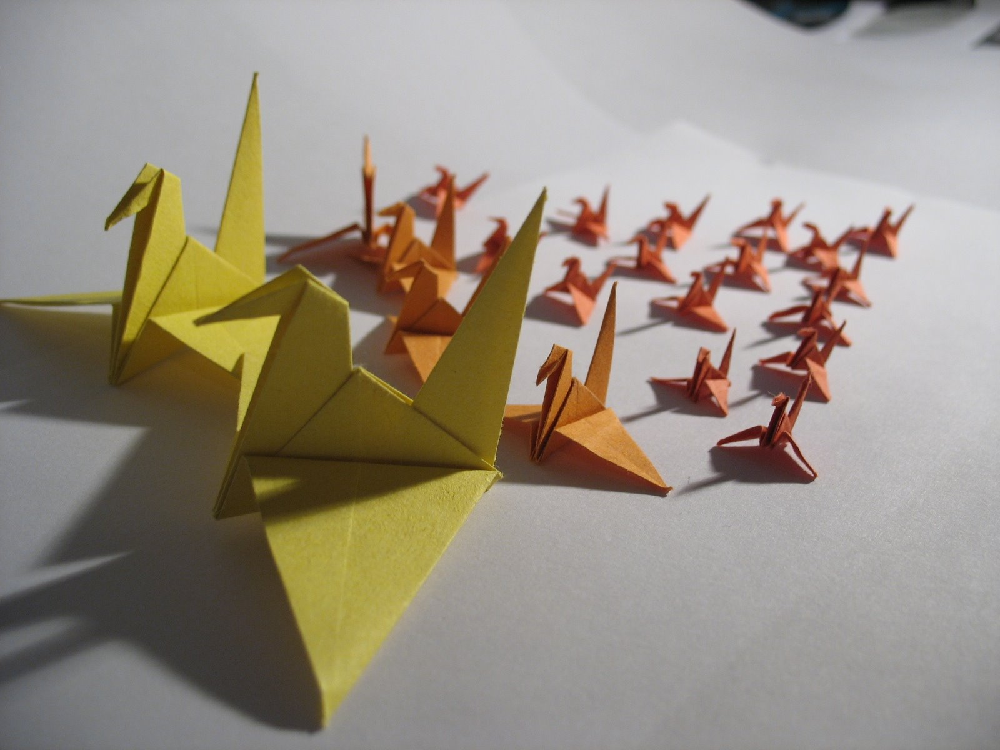
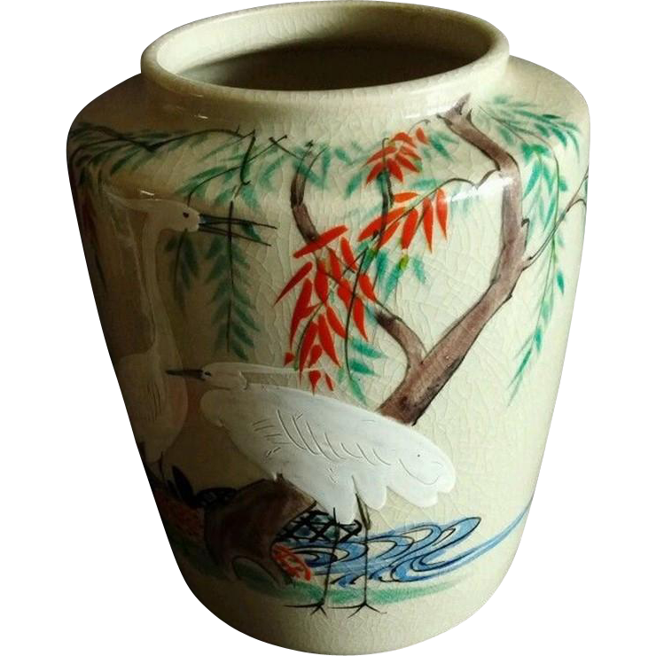
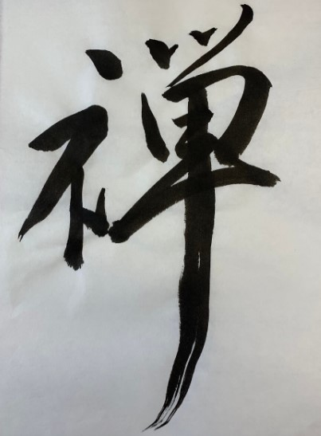
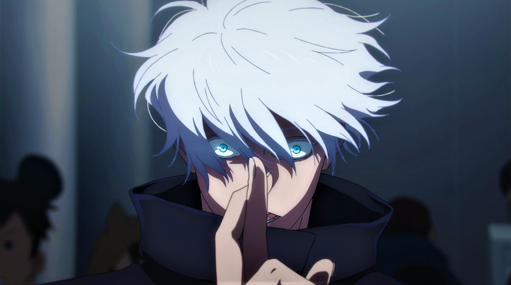
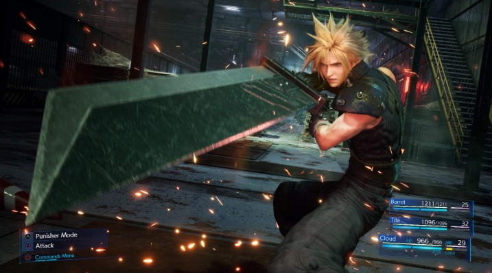
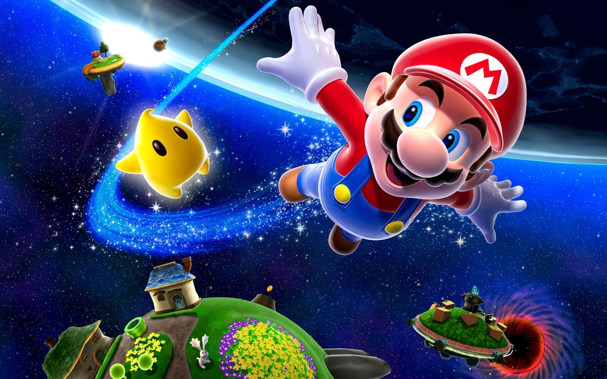
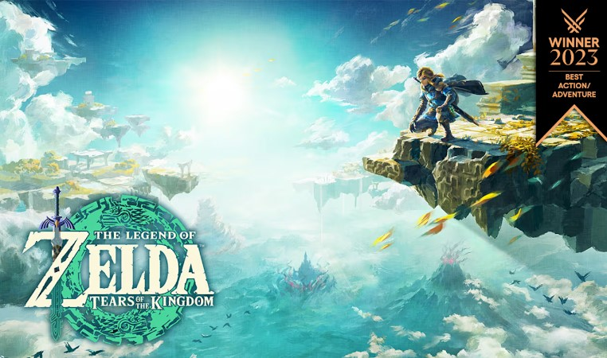

Budaya Jepang: Harmoni antara Tradisi dan Modernitas
Festival Tradisional: Warisan Budaya yang Hidup
Jepang dikenal dengan berbagai festival tradisional, atau matsuri, yang meriah dan penuh warna. Beberapa festival yang paling terkenal termasuk:
- Gion Matsuri di Kyoto: Salah satu festival terbesar di Jepang yang berlangsung sepanjang bulan Juli, menampilkan parade besar dan kostum tradisional.
- Hanami (Perayaan Melihat Bunga Sakura): Saat musim semi tiba, orang-orang berkumpul di bawah pohon sakura untuk menikmati pemandangan bunga yang bermekaran.
- Awa Odori di Tokushima: Festival tarian rakyat yang diadakan pada bulan Agustus, di mana penari mengenakan pakaian tradisional dan menari mengikuti musik tradisional.


Seni dan Kerajinan Tradisional
Jepang memiliki sejarah panjang dalam seni dan kerajinan, dari seni lipat kertas origami hingga seni membuat tembikar yang halus seperti keramik Kiyomizu. Kaligrafi Jepang, atau shodō, juga merupakan bagian penting dari budaya Jepang, di mana keindahan huruf-huruf kanji diekspresikan dengan tinta di atas kertas.
Kehidupan Modern: Teknologi dan Budaya Pop
Selain tradisi kuno, Jepang juga merupakan pusat teknologi dan budaya pop modern. Kota-kota seperti Tokyo adalah rumah bagi pusat inovasi teknologi, serta tempat berkembangnya manga, anime, dan video game. Akihabara di Tokyo adalah surga bagi para penggemar budaya pop Jepang, dengan toko-toko yang menjual berbagai barang mulai dari figurine hingga peralatan elektronik terbaru.
- Teknologi di Jepang: Masa Depan yang Ada Sekarang.
- Kereta Peluru (Shinkansen): Simbol Kecepatan dan Efisiensi
- Robotika dan AI: Pemimpin Dunia dalam Inovasi
- Teknologi Konsumen: Gadget dan Elektronik Canggih
- Budaya Pop Jepang: Pengaruh Global yang Tak Terbantahka
- Manga dan Anime: Fenomena Global 
- Video Game: Industri Hiburan yang Berkembang Pesat 
- Fashion dan Musik: Tren dari Harajuku hingga J-Pop
- Otaku: Komunitas Pecinta Budaya Pop
Jepang telah lama dikenal sebagai salah satu negara terdepan dalam pengembangan teknologi. Mulai dari elektronik, robotika, hingga transportasi canggih, inovasi di Jepang terus menginspirasi dunia.
Shinkansen, atau kereta peluru, adalah salah satu contoh teknologi transportasi canggih di Jepang. Dengan kecepatan hingga 320 km/jam, Shinkansen bukan hanya alat transportasi yang cepat dan efisien, tetapi juga simbol kemajuan teknologi Jepang. Sistem kereta ini sangat tepat waktu, nyaman, dan aman, serta menghubungkan berbagai kota besar di Jepang, seperti Tokyo, Osaka, Kyoto, dan Hiroshima.
Jepang dikenal sebagai pionir dalam robotika. Robot-robot canggih digunakan di berbagai industri, termasuk manufaktur, pelayanan pelanggan, dan bahkan perawatan kesehatan. Salah satu contoh yang terkenal adalah ASIMO, robot humanoid buatan Honda yang dirancang untuk membantu manusia dalam aktivitas sehari-hari.
Selain itu, banyak hotel di Jepang yang menggunakan robot concierge untuk melayani tamu, dan ada restoran yang mengandalkan robot pelayan untuk mengantarkan pesanan. Di bidang kesehatan, robot perawat juga telah diujicobakan untuk membantu perawatan lansia, seiring dengan tingginya populasi lansia di Jepang.
Sebagai rumah bagi raksasa teknologi seperti Sony, Panasonic, dan Toshiba, Jepang terus menghasilkan inovasi dalam produk-produk konsumen seperti televisi, kamera, ponsel pintar, dan perangkat rumah tangga cerdas. Di Tokyo, terutama di distrik Akihabara, Anda dapat menemukan berbagai toko yang menjual gadget terbaru, peralatan elektronik, dan barang-barang teknologi yang sulit ditemukan di tempat lain.
Selain itu, Jepang juga menjadi pemimpin dalam pengembangan virtual reality (VR) dan augmented reality (AR), yang kini banyak digunakan dalam hiburan, pendidikan, hingga pelatihan militer.
Di luar kemajuan teknologinya, Jepang juga merupakan pusat budaya pop yang memiliki pengaruh besar di seluruh dunia. Manga, anime, dan video game adalah tiga elemen utama dari budaya pop Jepang yang telah merambah berbagai belahan dunia, memikat jutaan penggemar.
Manga (komik Jepang) dan anime (animasi Jepang) telah menjadi fenomena global yang mendominasi industri hiburan. Beberapa judul manga dan anime yang mendunia seperti Naruto, One Piece, Dragon Ball, dan Attack on Titan memiliki jutaan penggemar setia di seluruh dunia. Jepang juga memiliki studio-studio besar seperti Studio Ghibli, yang dikenal dengan karya animasi kelas dunia seperti Spirited Away dan My Neighbor Totoro.
Kultur anime dan manga tidak hanya populer di kalangan anak-anak, tetapi juga di kalangan remaja dan orang dewasa. Di Jepang, Anda dapat menemukan kafe bertema anime, festival cosplay, dan toko khusus yang menjual pernak-pernik terkait karakter anime favorit.
Jepang adalah pusat bagi beberapa perusahaan pengembang video game paling terkenal di dunia, seperti Nintendo, Sony Interactive Entertainment, dan Square Enix. Konsol game seperti PlayStation dan Nintendo Switch diproduksi di Jepang dan memiliki basis penggemar global. Selain itu, banyak game terkenal seperti Final Fantasy, Super Mario, dan The Legend of Zelda berasal dari negara ini.
Tokyo memiliki banyak tempat bagi penggemar game untuk menikmati hiburan ini, mulai dari game center (pusat permainan arcade) hingga toko-toko yang menjual merchandise eksklusif game. Salah satu pusat game paling populer di Tokyo adalah Akihabara, di mana Anda dapat mencoba berbagai game terbaru atau menemukan barang koleksi dari game klasik.
Di bidang mode, distrik Harajuku di Tokyo telah menjadi ikon fashion global, terutama karena gaya berpakaian anak mudanya yang eksentrik dan penuh warna. Di Harajuku, Anda akan menemukan berbagai subkultur mode, seperti Lolita Fashion, Gyaru, dan Kawaii. Gaya ini memengaruhi tren fashion di banyak negara dan muncul di majalah, media sosial, hingga panggung mode internasional.

Di dunia musik, J-Pop (Japanese Pop) juga menjadi bagian dari budaya pop yang sangat populer. Grup-grup musik seperti Arashi, AKB48, dan Perfume memiliki jutaan penggemar di seluruh Asia dan dunia. Selain itu, Vocaloid seperti Hatsune Miku—karakter virtual yang menyanyi menggunakan teknologi sintetis—telah menjadi fenomena yang sangat unik di Jepang, dan bahkan melakukan konser di berbagai negara.
Di Jepang, ada istilah Otaku yang merujuk pada orang-orang yang sangat antusias dengan anime, manga, dan game. Otaku memiliki komunitas yang besar dan aktif, baik secara online maupun di kehidupan nyata, seperti di Comiket, acara tahunan terbesar untuk penggemar manga dan anime. Di acara ini, ribuan penggemar berkumpul untuk membeli barang-barang edisi terbatas, bertukar informasi, dan cosplay.